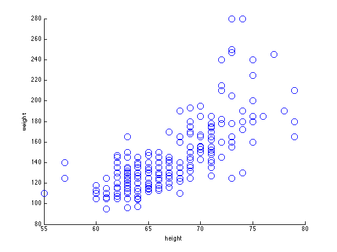
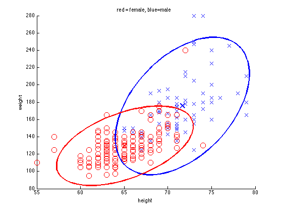

Gauss Height Weight Demo in 2d
rawdata = loadData('heightWeight');
data.Y = rawdata(:,1);
data.X = [rawdata(:,2) rawdata(:,3)];
maleNdx = find(data.Y == 1);
femaleNdx = find(data.Y == 2);
classNdx = {maleNdx, femaleNdx};
figure;
h=scatter(data.X(:,1), data.X(:,2), 100, 'o');
xlabel('height'); ylabel('weight')
printPmtkFigure('heightWeightScatterNoLabels')
figure;
colors = 'br';
sym = 'xo';
for c=1:2
str = sprintf('%s%s', sym(c), colors(c));
X = data.X(classNdx{c},:);
h=scatter(X(:,1), X(:,2), 100, str);
hold on;
end
xlabel('height'); ylabel('weight')
title('red = female, blue=male');
printPmtkFigure('heightWeightScatter')
for c=1:2
X = data.X(classNdx{c},:);
mu = mean(X); Sigma = cov(X);
gaussPlot2d(mu, Sigma, 'color', colors(c));
end
printPmtkFigure('heightWeightScatterCov')
 